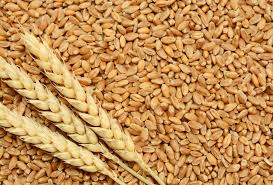
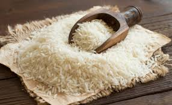
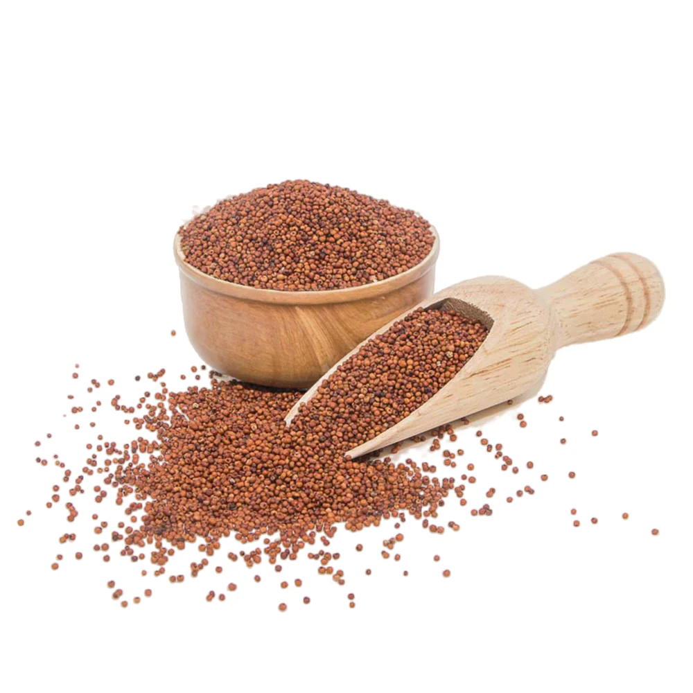
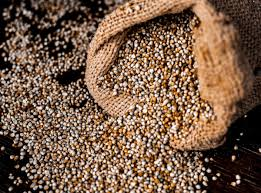
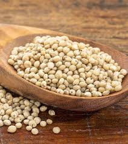

Wheat
Rs 1200
Wheat is a cereal grain, a staple food in many cultures, and a key ingredient in various foods like bread, pasta, and baked goods

Rice
Rs 750
Rice is a cereal grain and in its domesticated form is the staple food of over half of the world's population, particularly in Asia and Africa.

Ragi
Rs 1000
Ragi, also known as finger millet, is a nutritious and versatile grain widely consumed in India and other parts of the world.

Bajra
Rs 1100
Pearl millet is the most widely grown type of millet. It has been grown in Africa and the Indian subcontinent since prehistoric times.

Jowar
Rs 400
Jowar, also known as sorghum or great millet, is a grain that is gluten-free and high in fiber.